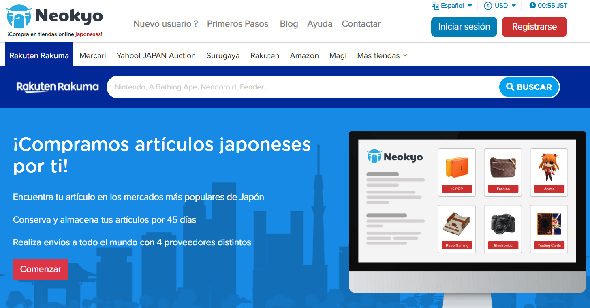

Los grupos de artículos que adquirimos provienen de Neokyo, una página intermediaria de Japón que abarca distintas plataformas de compra-venta tales como Rakuma, Mercari, Amazon, etc. Para que entiendas mejor el proceso que seguimos a la hora de relizar nuestros pedidos grupales, en este apartado te explicamos cómo funciona esta web.
Todos nuestros artículos provienen de Mercari. Tras realizar una solicitud de compra, creamos el Post en Instagram para que la gente pueda pedir aquello que quiera y, cuando todo el grupo de artículos se reclama, se paga para asegurarlo.
Es entonces cuando suceden dos cosas: el pedido se cancela debido a que otra persona ha comprado los artículos antes (en ese caso, el dinero se almacena en el monedero de la cuenta de Neokyo, y puede utilizarse para otra compra), o se asegura. Es ahí cuando su estado cambia a "En espera de entrega al almacén", y sólo entonces se piden los pagos correspondientes a cada persona.
Los artículos pueden almacenarse un total de 45 días desde que el primero llega al almacén. Cuando la fecha límite se acerca, realizamos el envío de la caja que contiene todos los productos. La caja suele tardar entre una o dos semanas en llegar, tiempo que utilizamos para solicitar pagos a cada persona dependiendo de la cantidad y el tipo de artículos que haya pedido.
¡Esperamos que te haya resultado útil! Si tienes cualquier otra pregunta, no dudes en contactar con nosotras a través de un Mensaje Directo (MD) en nuestras cuentas de Instagram. Puedes encontrarlas en la página de inicio.